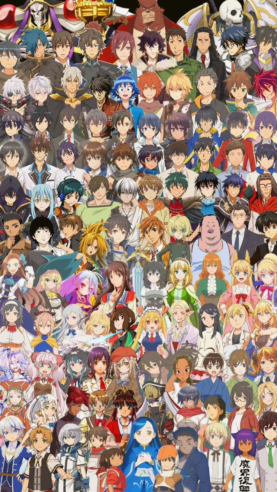
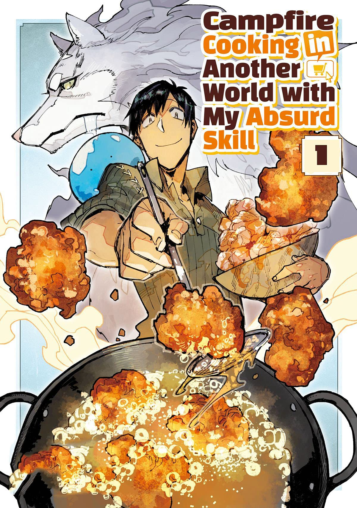
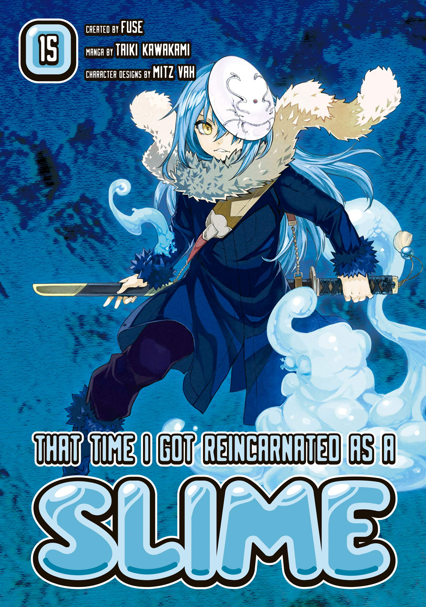
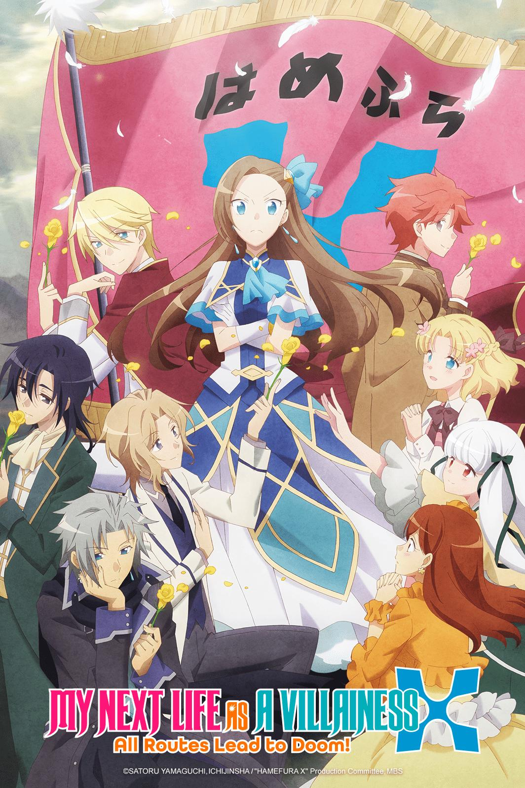
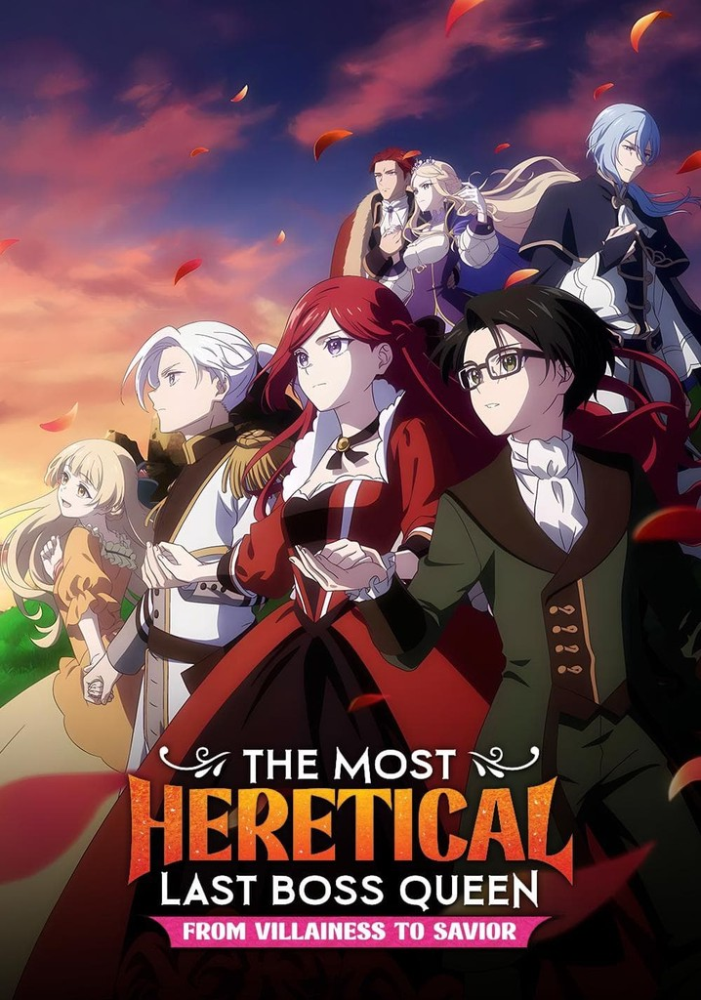
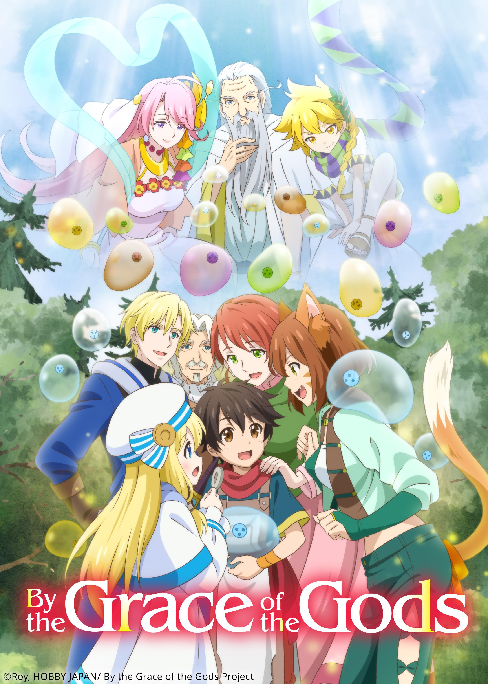
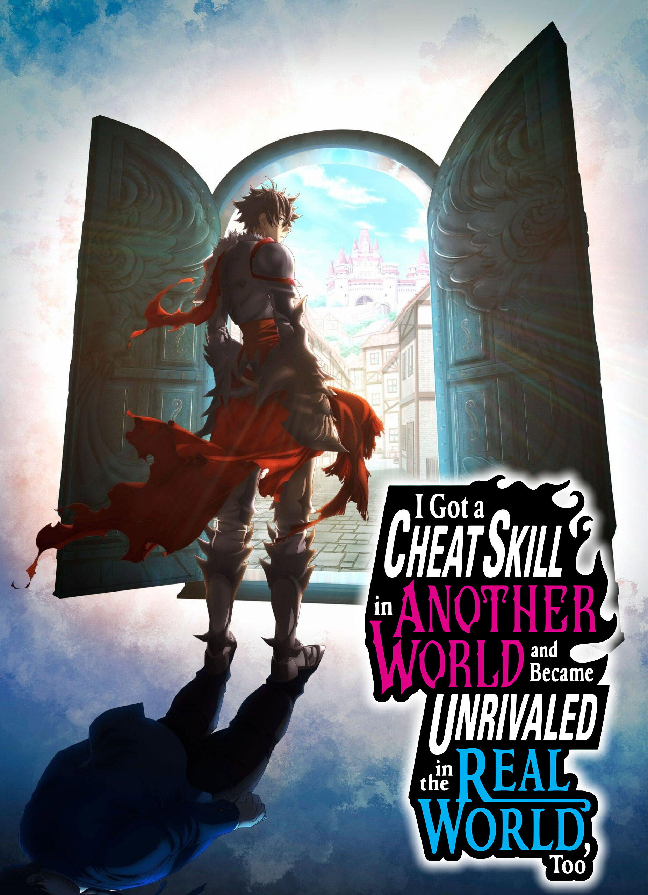

Explore the other world stories with the amazing characters, as they discover new peace and happiness and live their life again to the fullest!

Isekai manga is a genre of Japanese comics where a character from our world, often go through death, summoning, or an accident and will be transported into another world, usually a fantasy setting with magic, monsters, or game-like rules.
Choose a manga and enjoy, Adventurer!
Choose a manga and discover another world stories.

Tsuyoshi Mukoda, an office worker accidentally summoned to another world, gets a skill that lets him order Earth groceries. He travels with a wolf, a slime, and a dragon, cooking meals so good that even gods get hooked.

Satoru Mikami, a 37-year-old office worker, is killed and reincarnated in a fantasy world as a slime with the skills Great Sage and Predator. He befriends monsters like the dragon Veldora and the goblins, then builds them into a nation where humans and monsters live together, growing into a powerful demon lord named Rimuru Tempest.

Catarina Claes, a noble girl, hits her head and remembers her past life as a Japanese gamer. She realizes she is the villainess of an otome game where every route ends in her exile or death. To avoid doom, she tries to improve her fate, but her kindness and obliviousness make nearly everyone, including the game's love interests and rivals, fall for her instead.

Pride Royal Ivy realizes at age eight that she's been reincarnated as the future wicked queen and final boss of an otome game. Instead of following the villain path, she uses her boss-tier powers and her knowledge of the game to protect the love interests and her kingdom, saving everyone she can.

Ryoma Takebayashi, a 39-year-old office worker, dies in an accident and is reincarnated in another world by the gods, who give him a second chance and their blessings. He just wants a quiet, easygoing life, so he sets out as an adventurer with a bunch of slime companions. His gifts and the gods' attention keep dragging him into bigger things than he planned.

Yuuya Tenjou is a bullied, ostracized high school student who steps through a mysterious door into a fantasy world full of priceless artifacts. He discovers he can travel back to his own world at will, bringing artifacts and skills with him. He uses them to level up and completely turn his life around, becoming unrivaled in both worlds.